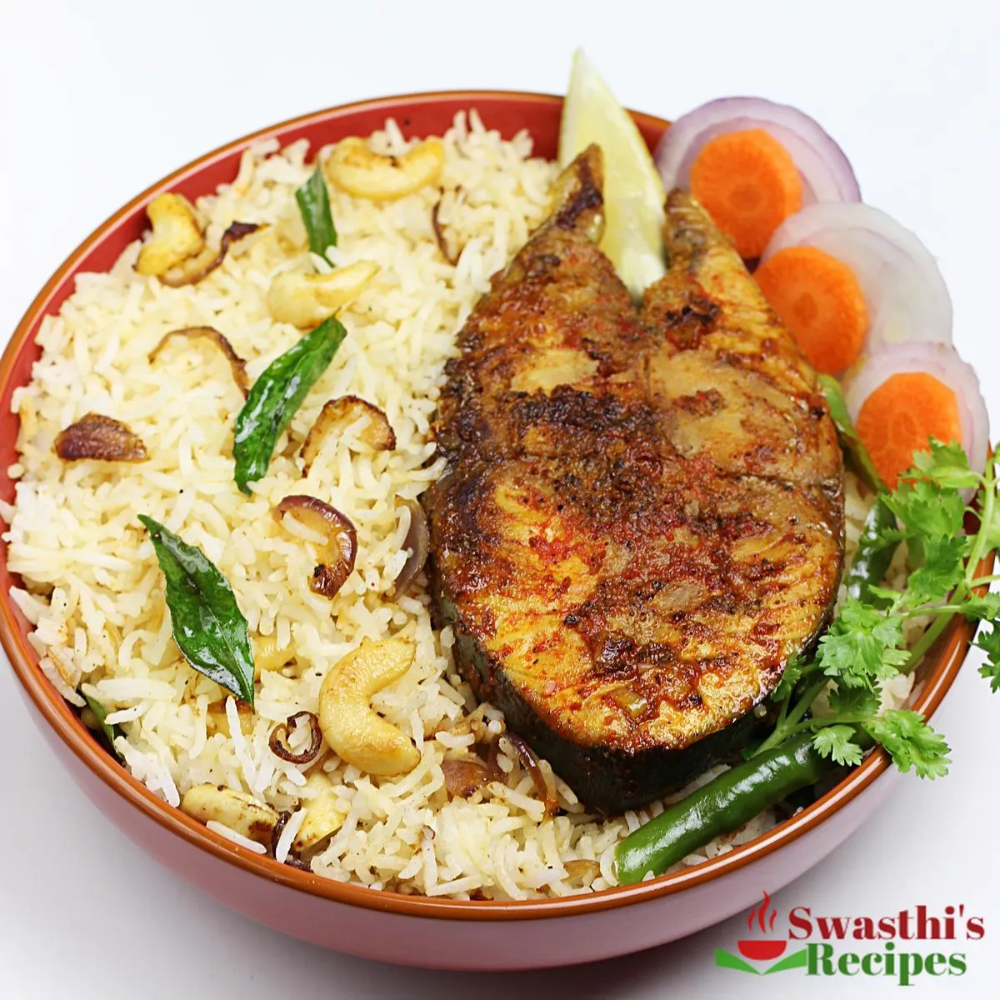

Home
Fish Rice Recipe

Description
Fish Rice is a versatile, nutrient-dense, and quick-cooking comfort meal consisting of fried or baked fish tossed with rice and crunchy vegetables.
Ingredients
- Rice: Use any kind of non-starchy rice because it is less sticky, like basmati or jasmine, but any type of long-grain rice will work.
- Fish: Use 2 to 3 fillets or steaks of any firm fish you like, such as salmon, snapper, Spanish mackerel (kingfish), cod, bass, haddock, or catfish.
- Ghee/butter/oil: Use ghee for flavor, or a mix of ghee and oil.
- Alternatively, use unsalted high-quality butter or your preferred cooking oil.
- Aromatics: 1 small onion (thinly sliced), 1 teaspoon chopped garlic, 3/4 teaspoon ginger-garlic paste (or 1/2 tsp each grated), and 2 sprigs of curry leaves (divided).
- Spices: 1/2 to 1 teaspoon red chili powder, 1 teaspoon garam masala, 1/8 teaspoon turmeric powder (optional), 1/4 to 1/2 teaspoon black pepper, and salt.
- Vegetables: 1 1/2 cups chopped carrots, 1 cup frozen peas (thawed), and 2 to 3 green chilies (slit).
- Extras: 10 whole cashews (split), 10 raisins (optional), and 1 to 1 1/2 tablespoons lemon juice.
Steps
- Cook Rice: Add 1 cup of uncooked rice to a bowl and rinse well.
- Drain completely, pour in fresh water, and bring to a rolling boil.
- Reduce the heat to low, cover, and cook until the water is absorbed and the rice is cooked through.
- Prep the Fish: Coat the fish with lemon juice, ginger-garlic paste, red chili powder, turmeric, garam masala, and salt.
- Leave aside for 10 minutes while you prep the onions and other ingredients.
- Fry the Fish: Heat oil or ghee and add half of the curry leaves.
- Place the fish in the pan and fry for 3 minutes, then flip.
- Add 1/3 of the red chili powder and fry on both sides until cooked through. Transfer to a plate.
- Make Fish Rice: Heat ghee or oil in the same pan.
- Add garlic, onions, carrots, green chilies, cashews, raisins, and the remaining curry leaves.
- Saute until the nuts turn lightly golden and the onions begin to caramelize, taking care not to burn them.
- Add the cooled rice, salt, peas, and pepper.
- Mix well and heat through; taste and adjust salt or pepper as needed.
- Serve the rice and fish together.